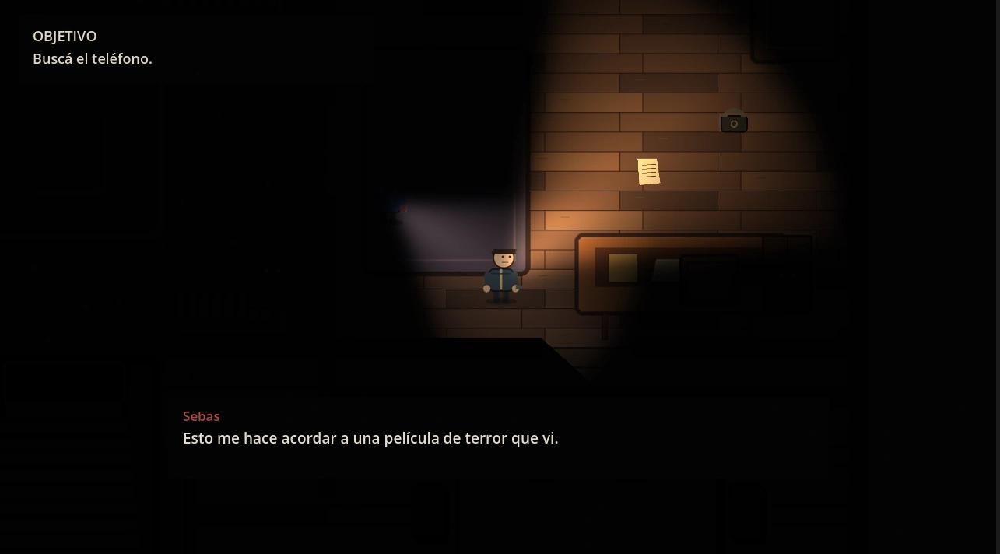

Modo Historia
Explorá Hollow Creek, seguí pistas y avanzá por la historia. Los objetivos y las indicaciones cambian según la escena.
JUEGO Y CONTROLES
Hollow House combina exploración 2D desde arriba, pistas y decisiones bajo presión. La oscuridad limita lo que sabes; los sonidos sugieren lo que no ves.
LA EXPERIENCIA
Explora la propiedad, encuentra objetos y sigue las pistas que permiten abrir nuevas rutas. Los objetivos en pantalla guían la historia sin revelar todo lo que hay detrás de cada puerta.
Cuando el peligro se acerca, importan la orientación de la linterna, los espacios disponibles y el momento de esconderse. La historia alterna exploración, incertidumbre y persecución.

CONTROLES · VERSIÓN 0.13.40
Asignaciones predeterminadas de La Cacería, verificadas en la versión oficial para Linux. Si reasignaste botones, mandan tus ajustes y las indicaciones en pantalla.
Podés reasignar controles de teclado y mando. El panel del mando permite activarlo, ajustar la zona muerta y la velocidad del cursor y restaurar botones. En menús, A / Cruz confirma y B / Círculo vuelve; los controles del cursor y el contexto pueden diferir de los de partida. Las ranuras directas 1–3 no tienen botón de mando asignado por defecto: usá LB/RB o L1/R1 para cambiar objeto.
View y Share son los nombres que muestra el juego. La etiqueta de tu mando puede variar. Esto documenta asignaciones, no certifica cada modelo de mando ni todos los navegadores. Revisá las indicaciones del prólogo y los minijuegos: no todas las acciones de La Cacería se aplican al Modo Historia.
MULTIJUGADOR
El menú 0.13.40 ofrece Modo Historia y La Cacería. Usá la misma versión que tus amigos y seguí las opciones disponibles en tu sala.
Explorá Hollow Creek, seguí pistas y avanzá por la historia. Los objetivos y las indicaciones cambian según la escena.
Un asesino persigue a los supervivientes. Buscá piezas y prepará rutas de escape: reparar el auto, abrir el portón o pedir ayuda son alternativas dentro de la partida.
Seleccioná objetos, usá distracciones, rescatá compañeros y consultá estadísticas durante la partida.
El anfitrión entra en Multijugador y crea la partida.
El anfitrión comunica el código de seis dígitos que muestra la sala.
Los invitados escriben su nombre e introducen el código.
Cuando los jugadores aparecen en la sala, el anfitrión inicia la partida.
DISPONIBILIDAD ACTUAL
Descargas para Windows y Linux; versión web en itch.io.
Textos y diálogos del juego.
Partida individual o modo multijugador.
Movimiento, interacción y orientación de la linterna.
La versión descargable está en itch.io.
WINDOWS · LINUX · WEB EN ITCH.IO
El caso continúa dentro de Hollow House.